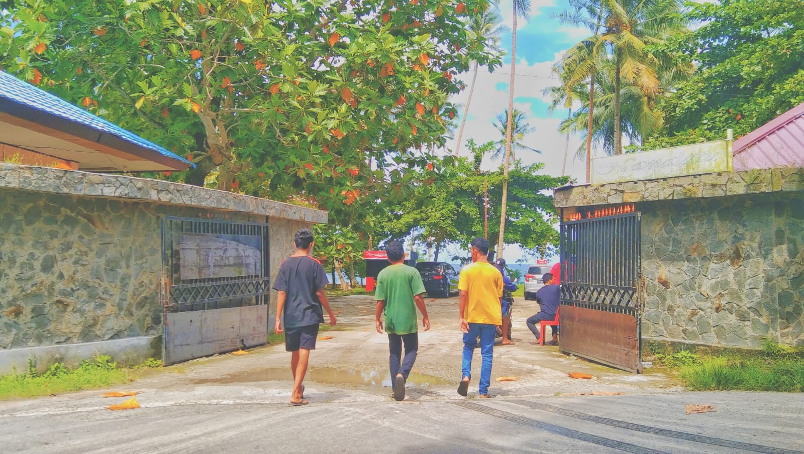

ayo tamang-tamang jadikan pantai namalatu sebagai salah satu pantai favorit tamang-tamang
daftar wisata terdekat
2023/05/16 10:00 Admin Kel 2
Pantai Namalatu diambil dari dua kata, yang pertama adalah Nama yang berarti nama, dan Latu yang berarti raja, pesona pantai ini membuatnya dianggap sebagai rajanya pantai di tanah Ambon
namalatu juga dihiasi dengan banyak pohon kelapa yang tumbuh dan membuat suasana sangat nyaman bagi para pengunjung
Pantai Namalatu atau Namalatu Beach nampak unik karena memiliki ciri khas berupa jajaran batu karang yang berwarna kecoklatan. Yang kemudian menjadi daya tarik bagi para wisatawan untuk berkunjung ke pantai ini.
harga tiket yang anda perlukan untuk masuk ke pantai ini yaitu dengan membayar 5.000Rp anda bisa menikmati keindahan pantai namalatu ini
ini adalah tempat parkir untuk kendraan mobil
ini adalah tempat parkir untuk kendraan motor
anda dapat membeli beberapa makanan dan minuman di tempat ini
di tempat ini anda mungkin dapat bersantai sambil melihat pemandangan laut dengan banyak batu karang yang bagus
walaupun pantai namalatu memiliki banyak batu karang, teman teman dapat melihat tepat dibelakang kami ini adalah tempat yang digunakan untuk berenang
di sediakan bantal renang untuk pengujung yang ingin memakakinya jika tidak bisa berenang
di sini juga menyediakan toilet bagi orang orang yang berlibur di pantai namalatu
terdapat beberapa penginapan yang bisa di pakai untuk para pengunjung tapi tentu harus membayar
nah untuk umat muslim yang ingin berlibur ke namalattu disini telah menyediakan mushola untuk umat muslim beribadah dan sekaligu berlibur
nah disni juga menyediakan baileo, nah tempat ini biasanya digunkan untuk melakukan kegiatan seperti sosialisasi, rapat , dll
thanks telah berkjung di website kami
silahkan kunjungi instgram kami untuk melihat lebih banyak foto tentang keseruan kami di namalattu Beach
silahkan klik logo instagram di bawah ini